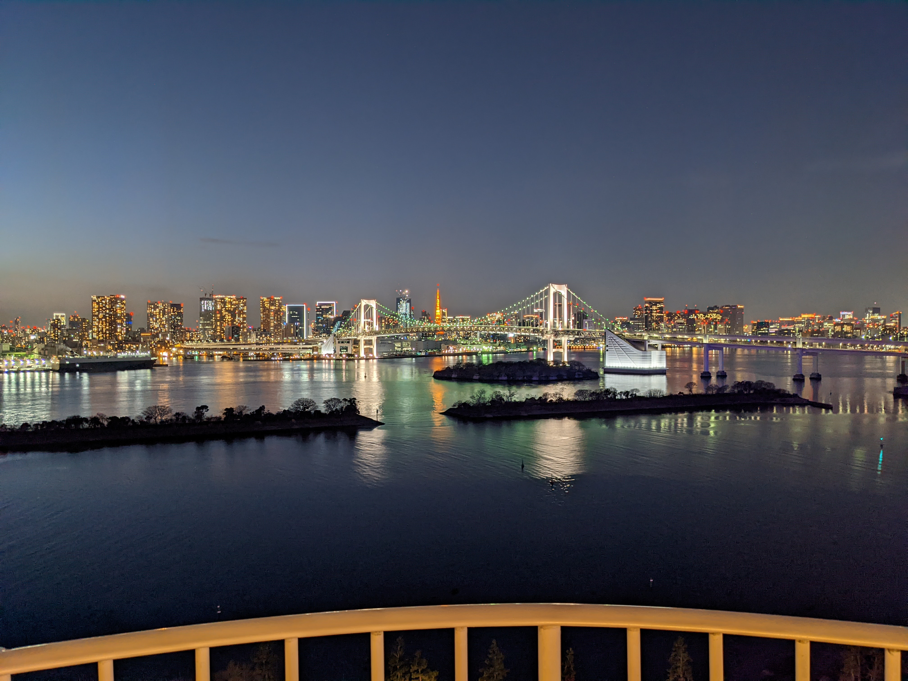

田 中 ゆ り
1993年1月27日生まれ
北海道出身
2013年に専門学校を
卒業後、神奈川県へ
2022年に結婚を機に
北海道に移住
略歴
エステの専門学校を卒業後、憧れのエステサロンへ就職@神奈川
エステティシャンとして働くが、やりがいを求めエンジニアに転職を決意
あまり知識のない自動車メーカーに配属
わからないことばかり、まったく違う環境、ホームシックで辛い日々...
辛い日々から脱出するべく、勉強に励んだ結果、
エンジニアはとても楽しい！と思えるように٩( ''ω'' )و
これからもずっとエンジニアとして活躍したく、プログラミングを勉強している最中です